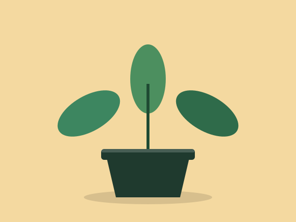

Easy on space
Compact plants fit on shelves, desks and narrow window ledges.
Leaf Desk
Leaf Desk helps you choose and keep houseplants when all you have is a windowsill, a shelf or the corner of a desk.
Browse the plants
Compact plants fit on shelves, desks and narrow window ledges.
Many of our picks need water only every week or two.
A little green beside your screen makes long study sessions feel calmer.